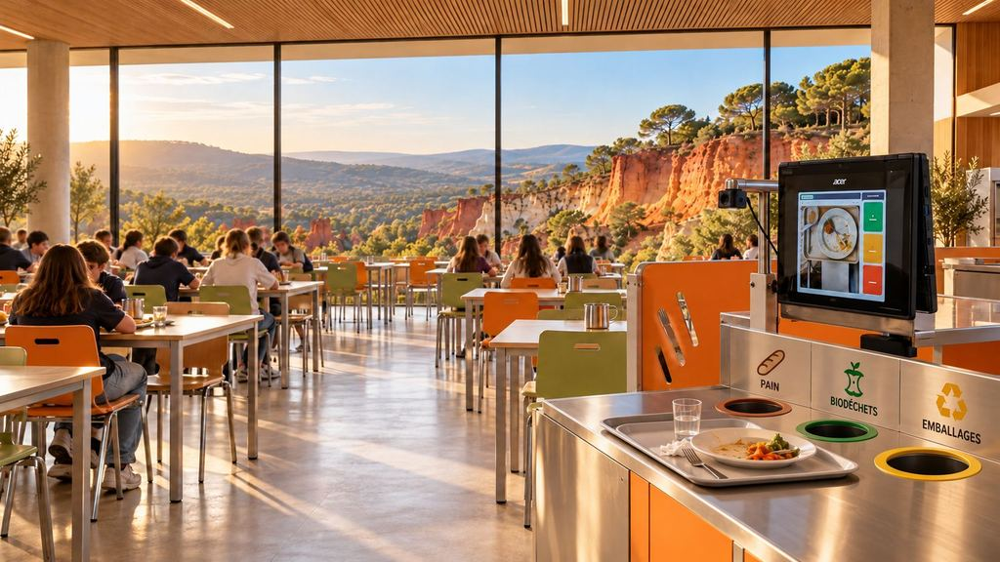
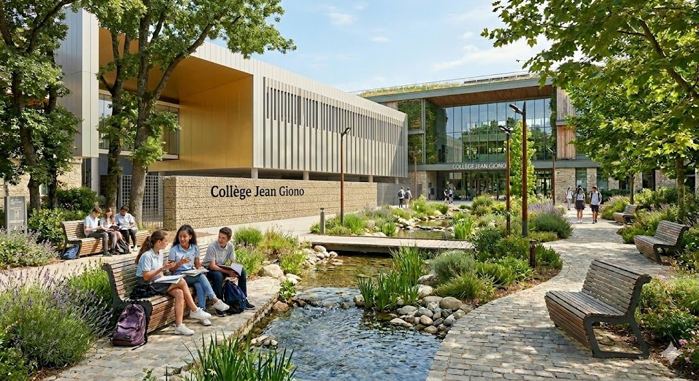

Choisis ta mission, remplis ta fiche et inscris-toi avec tes camarades.

Cantine · midiScan des plateaux, pain et fruits, biodéchets et emballages : choisis tes créneaux de 11h30 à 13h30.
Ouvrir le planning →
EnquêteUne nouvelle mission arrive bientôt.
Bientôt disponible